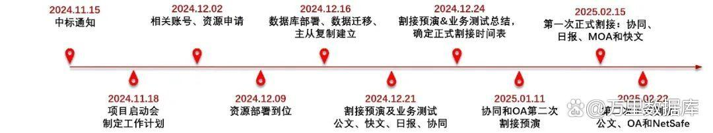
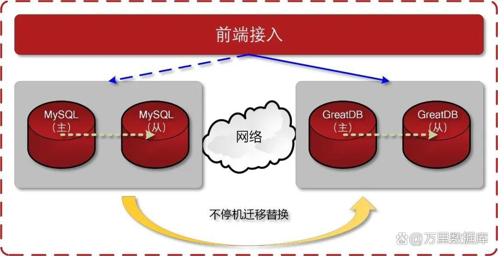

零改造+不停机 GreatDB助力中国移动办公系统MySQL数据库替换
中国移动某专业公司管信OA、协同办公等办公管理系统，承担日常公文流转、流程审批等核心办公场景。这类业务虽非高频交易，但对系统连续性要求较高，每日早高峰（8:30-10:00）集中审批、数据加载等操作需稳定支撑，月末/季末/年末的周期性业务量波动亦对数据库可靠性提出挑战。
客户原使用的MySQL数据库受限于原生主从复制的分钟级切换延迟，且在并发场景下存在锁竞争问题，叠加国家国产化合规政策要求，客户急需通过自主可控的国产数据库实现国产替代。

01 办公系统对数据库有哪些需求？
1.业务特性适配
以OLTP 事务处理为主（如流程状态更新、用户权限管理），需保障高并发时段的业务稳定性；
要求业务代码零改造，现有基于MySQL协议开发的OA系统要实现无缝迁移，避免业务中断；
业务连续性：系统故障需在短时间内恢复，确保办公流程不中断。
2.国产化与安全要求
新替换的数据库要兼容国产主流操作系统（如欧拉、BC-Linux）及基于国产CPU（如鲲鹏、海光）的服务器硬件，构建自主可控技术链；
数据库要通过信息安全技术数据库管理系统安全技术要求EAL4增强级安全认证，满足办公数据（含敏感公文）的存储与访问安全。
3.迁移与运维效率
数据迁移采用不停机迁移模式，迁移过程中保持业务持续运行；
运维工具需兼容现有业务系统与数据库技术体系，降低学习成本。
02 定制化平滑迁移 全兼容+代码零改造+不停机
1. 全兼容迁移，应用无感知
协议与语法无缝适配：GreatDB完全兼容MySQL协议和语法，OA系统中的存储过程、触发器（如流程自动归档）、视图（如待办事项统计）可直接复用，无需修改应用代码；
生态工具复用：GreatDB完全兼容MySQL生态，原有MySQL运维工具（如 Percona Toolkit）、中间件（如应用连接池）等无需替换，仅修改数据库连接地址即可指向GreatDB，实现“开箱即用”。

2. 主从复制为主的高可用架构
主从复制+双轨并行：采用1主1备或1主2备架构，基于MySQL原生主从复制机制实现数据实时同步。割接前通过“双写”模式（业务先写入MySQL，再同步至 GreatDB）确保数据一致，割接时仅需切换应用连接至GreatDB，全程保障业务不中断；
反向回退保障：割接后立即建立GreatDB→MySQL的反向同步链路，形成热备通道。如遇异常情况，可快速切回原系统，保障RTO<30秒。
3. 国产化与安全强化
全栈国产化适配：支持欧拉、BC-Linux 等国产操作系统，以及鲲鹏、海光服务器，满足信创环境部署要求；
安全合规落地：提供细粒度权限控制（如用户组分级授权）、操作审计（记录DDL/DML变更），确保公文数据安全可控。
4.极简迁移与运维
物理复制+增量同步：通过直接读取MySQL物理数据文件（.ibd）完成全量迁移，结合Binlog解析实现增量数据实时同步，迁移效率较传统逻辑备份提升80%；
兼容现有运维体系：保留原有监控工具（如BOMC）对接方式，运维团队可通过熟悉的界面实现状态监控、备份管理，降低学习成本。
03 项目价值：办公场景定制化
1. 零改造迁移，极速交付
应用系统无需代码修改，从启动迁移到割接仅耗时2周，较传统数据库方案时间缩短70%，最大限度减少对办公业务的影响；
迁移过程中用户无感知，流程审批、会议预约等功能可持续稳定运行。
2.高可靠保障连续性
主从复制机制保障数据强一致性（RPO=0），故障切换时间控制在秒级内，满足办公系统“不中断”需求；
采用双轨并行模式，提供长时间回退能力，消除迁移风险。
3. 国产化与安全双达标
数据库GreatDB及工具链均为自主研发，满足客户信创要求；
全链路安全防护（加密存储、权限审计）满足金融级合规标准，办公数据安全等级显著提升。
中国移动某专业公司MySQL替换项目采用GreatDB的“全兼容迁移+应用代码零改造+不停机切换”方案，成功为办公系统构建了安全、稳定的数据底座。本方案聚焦办公场景核心需求，以零改造、不停机为亮点，在保障业务连续性的同时，实现了技术自主可控的升级。
未来，万里数据库将持续为更多行业提供定制化国产数据库解决方案，助力数字化转型与合规建设双轨并行。